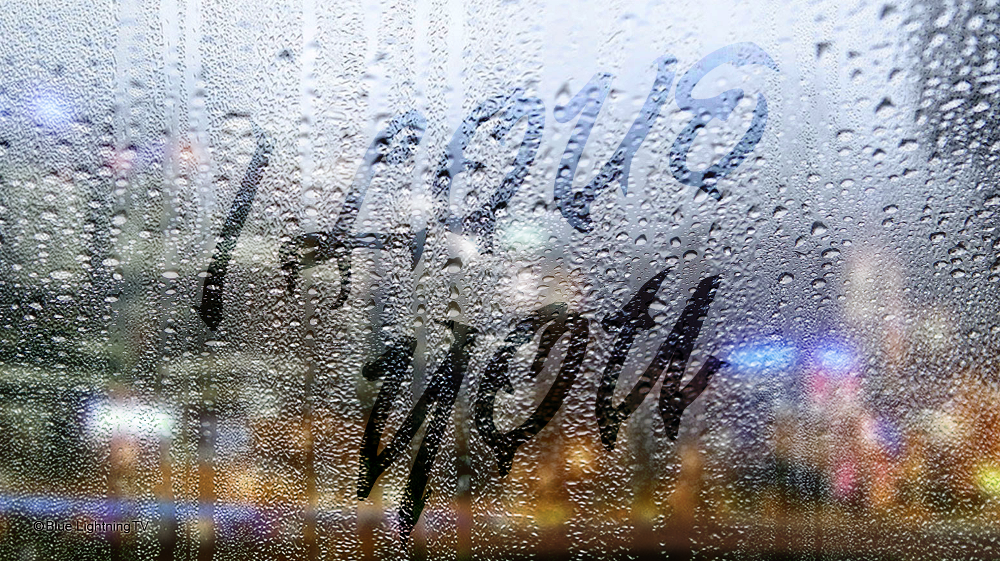
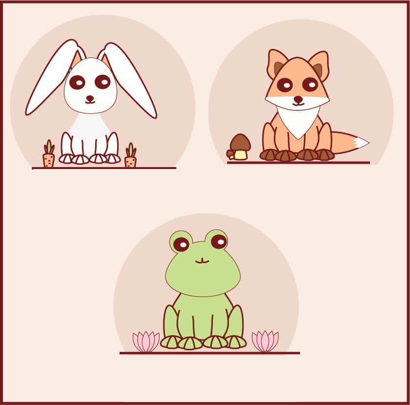

Lake Phone
Nature has its statics. Designing this, made me realize everything is possible if you just focus everything to it.
Drizzle of love
If you combine two things with a great significant you might be able to come out with something perfect.
Diamonds
Nature has its statics. Designing this, made me realize everything is possible if you just focus everything to it.
Frogs
Nature has its statics. Designing this, made me realize everything is possible if you just focus everything to it.
My Name

Nature has its statics. Designing this, made me realize everything is possible if you just focus everything to it.
My Logo
Nature has its statics. Designing this, made me realize everything is possible if you just focus everything to it.
Magazine
Nature has its statics. Designing this, made me realize everything is possible if you just focus everything to it.